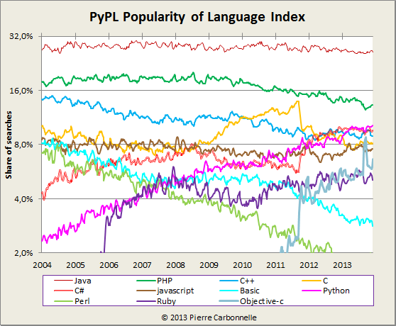

Agenda
- Introduction
- Tour de table
- Python User Group
- Arthur Vuillard - Tests Unitaires sous Python
- Michael Bright - Tendences developement en 2014
- Discussion sur le Groupe
Introduction
Tour de Table
Ou sommes nous?
- La Casemate(ccsti) heberge
- Le FabLab (Atelier de Fabrication)
- Le LOG (Grenoble Hackerspace)
Pourquoi un PyUG?
- Vous-etes nombreux (a la demander?)
- Je le veux (AlpesJUG c'est bien mais ...)
Python
- Langage de l'Annee?
- Pas d'apres TIOBE 2.4% (-1.77%).
- TIOBE Index compte le nombre de pages web avec un nom de langage, mais base sur l'existence pas les acces ...
- D'apres PYPL 10.2% (+1.3%).
- PYPL recherche l'utilisation de "langage tutorial" dans Google Trends
PYPL

- Perso je doute ... pour Javascript ...
Pourquoi moi?
- Je voulais un PyUG ...
- Pas d'autre merite ...
Tests Unitaires
Tendences development en 2014
References
DZone - dev-tech-will-be-hot
Recherche: Tendences Python 2014
Resultat
Recherche: Python 2014
Resultat
- Monty Python reunion en 2014
Tendences Python in 2014
Revelation de l'annee 2013, Docker fera encore des vagues en 2014. Outil de containerization qui donne un alternatif interressant aux VMs, permettant de creer et distribuer des images de conteneur.
Pandas and Vincent
- Pandas - Python Data Analysis Library
- Pandas v0.13 est sorti le 15 janvier (release majeur)
- Vincent - Librarie de visualisation (Vega grammaire)
Qqn veut nous montrer Numpy/Pandas/Vincent/iPython ??
- Framework JavaScript MVW propose par Google
- Concu pour faire des web apps, qui concurrence Ember et Knockout.
- data-binding bidirectionnel mieux optimise
- approche delcarative
- moins verbeux qu'attribut noeud Ember ou template Knockout
- support de Web Components
- Feuille de route riche avec gestion d'animations, performances ameliores.
- Fait parti du MEAN stack (Mongo/Ember/Angular/Node.js)
Source: JournalDuNet
Angular Rocks
Un plateforme de blog base sur Node.js, repute pour sa simplicite et sa beaute. Blog peut-etre ecrit directement en markdown, favorize les utilisateurs plutot que developpeurs.
Voir features
Focus sur blogging, mais avec system de plugins Node.js qui permet d'etendre. Mobile d'abord ...
Finance via sur Kickstarter
CSS Framework qui avait ete depasse par le Bootstrap de Twitter mais qui revienne en 2014 grace a des ameliorations de performance.
Grunt/Bower
- Yeoman stack
- Yeoman: Demarrer un app a partir d'un generator (Angular/Ember/..)
- Bower: Gestion de dependences
- Grunt: Build/Test (aujourd'hui JS/Ruby ...)
- Forum de discussion next-gen tres facile et agreable a utiliser.
- Deja adopte par qqs formations en ligne.
- Information sur le nombre de clicks sur un poste
- OpenSource
- Plugins
Coinbase
- Permet des transactions d'argent anonymous
- Obtien des bitcoins par
- Bitcoin mining - decouvre un nouveau block (50 bitcoins)
- En les achetant
- En fournissant des services
Steam Machines
Screenhero
- Mac et Windows seulement
- Partage d'ecran avec multiple controle
- Tres pratique pour le codage collaboratif
- Editeur de Markdown en WebApp
FitBit
- Fitness tracking
- J'espere la meme chose pour le Pebble ...
Arduino/Espruino
- Il y aura plus de hardware hacking en 2014
- Example d'open hardware
- On verra des SDKs plus oriente technos web
- Espruino: Kickstarter project pour Arduino-Javascript
Crowd Sourcing
- Kickstarter
- Pebble montre
- Parallela CPU multi-coeur (16/64)
- Indiegogo
- [DK] Airtame Wireless HDMI (1m$ > 160k$)
- [UK] Linux Voice
- [UK] HDMIPi
- [Eu?] TriggerTrap
- Neurio - Gestion d'energie
OpenShift
- Le PaaS de RedHat ... qui va integrer Docker
- Et Solum le projet OpenStack ??
FoundationDB
- Le SQL revient comme le No-NoSQL !
- Postgres sera toujours un bon choix
FoundationDB permet de melanger differents modeles de donnees dans un seule DB toujours avec des transactions ACID.
- Pour 2014
- Remote debug
- Mobile emulation
WebRTC
Projet opensource pour enabler commns temps-reel dans les browseurs.
- Pousse par Google, Mozila, Opera
- Workgroups IETF (protocole), W3C (api)
- Permettra applications audio/video chat dans le browser
Web Components and CSS Grid Layout
Widgets pour HTML ...
CSS Grid Layout
Silex, Composer, and Slim
Offline-first Development
- En 2013 mobile-first developement
- En 2014 offline-first developement
Offline.js facilitera la tache d'ecrire des applis non-connecte.
Discussion sur le Groupe
Le LIEU
- La Casemate
- Pas besoin de monter un assoc (si meme soiree que LOG)
- Synergies avec LOG
- Centre Ville
- Petite Salle
- Ailleurs?
- Maison Jean Kuntzmann sur le Campus?
Commns
- Meetup
- LinkedIn
- GoogleGroup
AFPy list
..!
Sondage
Sondage
Groupes
- AlpesJUG (oops - ils ont une reunion ce soir!)
- GUILDE
- Grenoble Hackerspace (LOG)
Evenements dans la region
- Reunion du Logiciel Libre (Lyon)
- MixIT - Avr. (Lyon)
- RuLu - Juin (Lyon)
- Human Talks
- WebInAlpes - Dec.
- AlpesJUG
- 11 Fevrier - injection (CDI)
- 19 Mars - JEE7/Glassfish
- 3 Avril soiree NightHacking (developper en java sur Raspberry-Pi)
- via AlpesJUG
Evenements ailleurs
Cyberspace
- Les MOOCs / Coursera
- Computational Investment
- Fundamentals of Prog
- Interactive Prog in Python
- Software Defined Networking
- Mechanical MOOC
La Suite
A vous ...